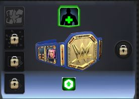
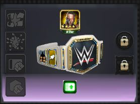
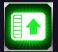
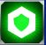
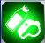
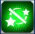

В игре существует механика титулов, тоесть поясов с некоторыми бонусами, а так же с возможностью установить в них медали
Пояса могут быть надеты начиная с трёх звёзд их уровень common, uncommon, epic
Начиная с четырёх звёзд в пояс можно уже установить плашку они уже имею уровень Legendary
Так же существуют пояса уровня ultimate в них можно установить ещё одну дополнитепльную плашку 
| Название | Изображение | Описание |
|---|---|---|
| Move dagame |  | Увеличивае урон приёмов. Варьируется от 5%-до 100% |
| Gem damage | Увеличивае урон гемов.Варьируется от 5%-до 100%(С таким же изображением может быть и уникальный пояс. С уроном наносимый определёнными гемами или например loot гемами.) | |
| Move damage defense | Уменьшает урон приёмов наносимый противником.Варьируется от 5%-до 100% | |
| Gem damage defense |  | Уменьшает урон наносимый гемами противником.Варьируется от 5%-до 100% |
| More health | Увеличивает базовое количество здоровья(тоесть, чем больше твой уровень тем больше получится дополнительное здоровье).Варьируется от 5%-до 100% | |
| More contracts |  | Увеличивает количество слотов тренера для данного персонажа с одного до двух. Тоесть этот персонаж можетиспользоваться в качестве тренера два раза вместо одного. |
| stun imunity |  | Даёт имунитет от эффекта stunned. |
| Extra turn |  |
Даёт возможность на дополнительный ход. Шанс на дополнительный ход при завершении хода равна 25%. |